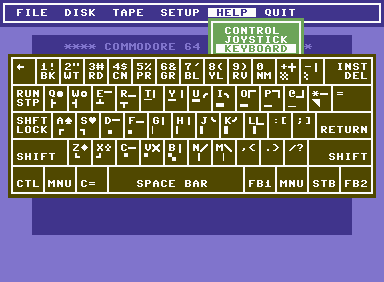

Meta-Development
Table of Contents
1 Illumination…
Is deliberate self modification by magic and may include spells of Enchantment cast at oneself to repair weaknesses or increase strengths, and Divination and Invocation performed for inspiration and direction.
Thus all magical operations are based on the use of will, perception and imagination, which is to say that they are all species of Enchantment or Divination. Imagination is that which occurs when will and perception stimulate each other.
2 F3 Das Uberkey
The idea here is that I can press f3, and it becomes Anything-Emagician.
With Which Key it means f3 becomes a visual menu until I really
start to learn the keystrokes.
2.1 Meta Keys and Prefixes
- f3
- Open an emagician file
- i
- Insert magickal key. (P-crosses and poops and bunnies, oh my!)
- t
- Show a todo list.
(bind-keys :prefix-map emagician/meta-keymap :prefix "<f3>" ("<f3>" . emagician/helm-emagician-dir) ("<f4>" . emagician/meta/run-all-emagick-tests) ("<f5>" . emagician/meta/run-all-tests) ("<f12>" . emagician/meta/publish-changed) ("S-<f12>" . emagician/meta/publish-all) ("a" . emagician/meta/agenda) ("i" . emagician/magick-keymap) ("t" . emagician/meta/show-todo))
3 Developing
3.1 TODO Capture Feature Idea
- org capture template to capture a new feature idea
3.2 Emagician Helm Source
Helm keeps changing its interface. For such an awesome package this is the one way in which it falls down for me. Anything used to be so easy to configure.
(defclass emagician/files-helm-source (helm-source-sync helm-type-file) ((candidates :initform (lambda () (when (file-accessible-directory-p emagician/dir) (directory-files emagician/dir t)))) (keymap :initform helm-generic-files-map) (filtered-candidate-transformer :initform #'emagician/helm-ct-is-org-file) (action :initform 'helm-type-file-actions) )) (defun emagician/helm-ct-is-org-file (candidates src) (remove-if-not (lambda (c) (let ((file (cdr c))) (and (string= (substring file -4) ".org") (not (string= (substring (file-name-nondirectory file) 0 2) ".#"))))) candidates)) (defun emagician/helm-emagician-dir () "List all the org files in the Emagician dir" (interactive) (helm :sources (helm-make-source "Files in Emagician-dir" 'emagician/files-helm-source) :candidate-number-limit 40 :buffer "*emagician-|-+-|-files*"))
3.3 Testing
3.4 Running all ERT tests
(defun emagician/meta/run-all-tests () (interactive) (ert "emagician/"))
3.5 Test out a fresh hot load of Emagician 💩
(defun emagician/test-initialization (&optional forms) (interactive) (let* ((init-file (expand-file-name "init.el" emagician/dir)) (magick-string "emagician/magick-output") (code `(condition-case err (progn (toggle-debug-on-error) (load-file ,init-file) ,(if forms `(progn ,forms) (message "No extra forms executed")) (message "(%s 'succcess)" ,magick-string)) ((error) (message "(%s (error (%s %s) (backtrace \"%s\")))" ,magick-string (car err) (cdr err) (with-output-to-string (backtrace))) (kill-emacs 1)))) (invocation-command (format "%s%s --no-init-file --batch --eval=\"%s\"" invocation-directory invocation-name (replace-regexp-in-string "\"" "\\\"" (format "%S" code) nil t))) (result (shell-command-to-string invocation-command)) (captured-result (substring result (or (string-match (concat "(" magick-string) result) (error "Unexpected result from child emacs %s" result)))) (parsed-result (read captured-result)) (err (assoc 'error parsed-result))) (message "Result: %s\n" (message "%s\n\n\n%s" (pp parsed-result) result)) (if err (error "Emagician Starter Kit Load Error: %s: %S" (cadr err) (cddr err)) (message "Successful!")))) (defun emagician/test-initialization-with (lisp) "Test an Emacs initialization with a given chunk of lisp." (interactive "xExecute: ") (emagician/test-initialization lisp))
This loads the starter kit as a batch and outputs the results as a message.
(defun emagician/test-init-through-batch () (interactive) (message "Running New Emacs: %s" (shell-command-to-string (concat invocation-directory invocation-name " " "--no-init-file --batch " "--eval='(progn (setq debug-on-error t) (setq emagician/self-test t))' " "--load=" (expand-file-name "init.el " emagician/dir) "--eval='' " "&"))))
This does a full GUI load, outputting any results as a message.
(defun emagician/test-full-init() (interactive) (message (concat "Running New Emacs: " (shell-command-to-string (concat invocation-directory invocation-name " " "--no-init-file " "--eval='(progn (setq debug-on-error t) (setq emagician/self-test t))' " "--load=" (expand-file-name "init.el " emagician/dir) "&")))))
3.6 Peering into the kit, the Emagician Agenda
Note, this has 2 strikes. The third agenda related strike requires a refactoring
3.6.1 General agenda
(defun emagician/meta/agenda () "Run agenda commands on the starter kit." (interactive) (let ((org-directory emagician/dir) (org-agenda-files (list emagician/dir)) (org-agenda-file-regexp "[^.].+\.org$")) (call-interactively 'org-agenda)))
3.6.2 Find Todo Items in these files
(defun emagician/meta/show-todo () "Show a list of TODO actions that are on Emagicians Starter Kit." (interactive) (let ((org-directory emagician/dir) (org-agenda-files (list emagician/dir)) (org-agenda-file-regexp "[^.].+\.org$") (org-agenda-overriding-header "-|-+-|- 🐰 META 🐰 -|-+-|-")) (org-agenda nil "t" nil)))
4 Distributing
4.1 Building the emagician site
4.1.1 Skewer!
Use the bookmarklet to connect and you're off to the races!
4.1.2 Publishing functions
(defun org-html-publish-to-tufte-html (plist filename pub-dir) "Publish an org file to Tufte-styled HTML. FILENAME is the filename of the Org file to be published. PLIST is the property list for the given project. PUB-DIR is the publishing directory. Return output file name." (org-publish-org-to 'tufte-html filename (concat "." (or (plist-get plist :html-extension) org-html-extension "html")) plist pub-dir))
4.1.3 Get ox-tufte
(require 'ox-md) (use-package ox-tufte)
4.1.4 Main publisher
(setq org-html-htmlize-output-type 'css) (setq htmlize-html-charset 'utf-8) (setq httpd-root (expand-file-name "gh-pages" emagician/dir)) (defun emagician/meta/get-menu (links) "Builds an html menu from every cons pair in LINKS." (mapconcat (lambda (pair) (format "<a href=\"%s.html\"> %s </a>" (cdr pair) (car pair))) links "")) (ert-deftest emagician/meta/get-menu-test () (should (equal (emagician/meta/get-menu '(("a" . "b"))) "<a href=\"b.html\"> a </a>"))) (defun emagician/meta/publish (project force async) (let* ((links '(("Index" . "index") ("Emagician" . "Emagician") ("Base" . "Emagician-Base") ("Install" . "Emagician-Install") ("Meta" . "Emagician-Meta") ("Interface" . "Interface") ("Programming" . "Programming") ("Text" . "Text") ("Org" . "Org-Grimoire") ("Lamp" . "Lamp") ("Journal" . "Journal") ("Snippets" . "Snippets"))) (emagician-html-preamble (concat "<menu class=\"top\">" (emagician/meta/get-menu links) "</menu>")) (common-publishing-settings `()) (org-publish-project-alist `(("emagician" :components ("emagician-assets" "emagician-org")) ("emagician-test" :components ("emagician-assets" "emagician-org-test")) ("emagician-assets" :base-directory ,(expand-file-name "assets/" emagician/dir) :recursive t :base-extension "css\\|js\\|png\\|jpg\\|gif\\|pdf\\|mp3\\|svg\\|eot\\|tff\\|woff" :publishing-directory ,(expand-file-name "gh-pages/assets" emagician/dir) :publishing-function org-publish-attachment) ("emagician-org" :base-directory ,emagician/dir :base-extension "org" :publishing-directory ,(expand-file-name "gh-pages" emagician/dir) :htmlized-source t :makeindex t :auto-sitemap t :sitemap-ignore-case t :html-html5-fancy t :headline-levels 5 :html-head-extra "<link href=\"https://fonts.googleapis.com/css?family=Inconsolata|Nixie+One|Taviraj:300,400\" rel=\"stylesheet\"><link href=\"./assets/styles/tufte-style.css\" rel=\"stylesheet\"><script src=\"https://use.fontawesome.com/432a2f463b.js\"></script>" :html-link-home "index" :html-preamble ,emagician-html-preamble :publishing-function org-html-publish-to-tufte-html ) ("emagician-org-test" :base-directory ,emagician/dir :base-extension "" :exlcude ".*" :include ("Index.org" "Emagician.org") :publishing-directory ,(expand-file-name "gh-pages" emagician/dir) :htmlized-source t :html-html5-fancy t :html-head-extra "<link href=\"https://fonts.googleapis.com/css?family=Inconsolata|Nixie+One|Taviraj:300,400\" rel=\"stylesheet\"><link href=\"./assets/styles/tufte-style.css\" rel=\"stylesheet\">" :html-preamble ,emagician-html-preamble :publishing-function org-html-publish-to-tufte-html ) ))) (org-publish project force async))) (defun emagician/meta/publish-changed () (interactive) (emagician/meta/publish "emagician" nil nil)) (defun emagician/meta/publish-all () (interactive) (emagician/meta/publish "emagician" t nil)) (defun emagician/meta/publish-assets () (interactive) (emagician/meta/publish "emagician-assets" t nil))
4.1.5 TODO Fix Main Publisher to be even less sucky using spliced lists.
4.2 ÆＳÞＥTＩC
The current ÆＳÞＥTＩC still needs a lot of work. It's much further ahead than a raw text export but nowhere near what I want.
Using the Tufte CSS along with dakrone's awesome exporter.
While I am not a fan of Tufte's ÆＳÞＥTＩC, there is no denying his design skill.
His ÆＳÞＥTＩC blows mine out of the water.
4.2.1 Image Quilt
(concat "<div class=\"my-quilt\">\n" (mapconcat (lambda (f) (format " <img src=\"./assets/images/tome-quilt/%s\" />\n" f)) (directory-files (expand-file-name "assets/images/tome-quilt" emagician/dir) nil (regexp-opt '("jpg" "jpeg" "png" "gif"))) "") "</div>\n")
4.2.2 Styling
(emagician/expect-dir "assets/styles")
4.2.3 Old Grey Rounded Squares. Just no
The thi.ng/org-spec is a good basis to build off of. https://github.com/thi-ng/org-spec
Things I like:
- The source blocks, properties blocks, etc all have little outlines
- Tags displayed nicely.
- Outbound links displayed differently.
- Table of contents.
Things I don't like:
- ÆＳÞＥTＩC … or lack thereof.
I've started to trim the fat off of that CSS and focus on the elements I enjoy.
a[name]:before { content: "#" attr(name); } a[name]:after { content: ""; } a[href^="http"]:after { content: "\21F4]]"; padding-left: 0.2em; } pre { background-color: #f8f8f8; background-size: 8px 8px; background-image: linear-gradient(135deg, transparent 25%, rgba(0, 0, 0, 0.02) 25%, rgba(0, 0, 0, 0.02) 50%, transparent 50%, transparent 75%, rgba(0, 0, 0, 0.02) 75%, rgba(0, 0, 0, 0.02)); overflow: auto !important; } pre.src:before { display: block; position: absolute; background-color: #ccccd0; top: 0; right: 0; padding: 0.25em 0.5em; border-bottom-left-radius: 8px; border: 0; color: white; font-size: 80%; } pre.src-sh:before { content: "SH"; } pre.src-javascript:before { content: "JS"; } pre.src-emacs-lisp:before { content: "Emacs-Lisp"; } pre.src-c:before { content: "C"; } div.figure { font-size: 0.85em; } .tag { font-family: "Roboto Slab", Helvetica, Arial, sans-serif; font-size: 11px; font-weight: normal; float: right; margin-top: 1em; background: transparent; } .tag span { background: #ccc; padding: 0 0.5em; border-radius: 0.2em; color: white; } .todo, .done { font-family: "Roboto Slab", Helvetica, Arial, sans-serif; font-weight: normal; padding: 0 0.25em; border-radius: 0.2em; } .todo { background: #f04; color: white; } .done { background: #5f7; color: white; }
4.2.4 Tufte-Plus CSS.
@import url("tufte.css"); h4 { font-style: italic; font-weight: 400; font-size: 1.7rem; margin-top: 1rem; margin-bottom: 0; line-height: 1; } .title { text-align: left; } .my-quilt { margin: 4rem 0; text-align: center; font-size: 0; } .my-quilt img { max-height: 200px; min-height: 200px; display: inline-block; } pre.code { font-size: 60%; transition: width 0.25s ease-in, font-size 0.25s ease-in; } pre.code:hover { width: 90%; font-size: 85%; } .tag:before { font-family: FontAwesome; content: "\f02b"; padding-right: 0.5rem; } .tag { padding: 0.3rem; float: right; background-image: linear-gradient(90deg, hsl(19, 27%, 86%), hsl(19, 28%, 84%)); border-radius: 0.3em; border: 1px solid hsl(19, 28%, 70%); box-shadow: 4px 4px 2px hsla(0, 0%, 0%, 0.2); } .tag span { border-radius: 0.2em; } span.org-string { color: #f94; } span.org-keyword { color: #c07; } span.org-variable-name { color: #f04; } span.org-clojure-keyword { color: #09f; } span.org-comment, span.org-comment-delimiter { color: #999; } span.org-rainbow-delimiters-depth-1, span.org-rainbow-delimiters-depth-5 { color: #666; } span.org-rainbow-delimiters-depth-2, span.org-rainbow-delimiters-depth-6 { color: #888; } span.org-rainbow-delimiters-depth-3, span.org-rainbow-delimiters-depth-7 { color: #aaa; } span.org-rainbow-delimiters-depth-4, span.org-rainbow-delimiters-depth-8 { color: #ccc; } #footnotes { display: none; } @media screen { h1.title { margin-left: 260px; } #preamble { position: absolute; top: -11px; left: 238px; width: 888px; } menu.top a:before { color: hsl(0, 96%, 40%); content: "⛥"; } menu.top a { text-transform: uppercase; font-size: 0.75rem; display: inline-block; margin-right: 10px; } #table-of-contents { position: fixed; top: 0; left: 0; padding: 1ex 1em 5em 2em; border-right: 1px solid #bbb; box-shadow: 3px 0 3px hsla(0,30%,50%,0.1), 5px 0 5px hsla(0,30%,50%,0.1), 8px 0 8px hsla(0,30%,50%,0.1), 13px 0 13px hsla(0,30%,50%,0.1), inset -3px 0 3px hsla(0,30%,50%,0.1), inset -5px 0 5px hsla(0,30%,50%,0.1), inset -8px 0 8px hsla(0,30%,50%,0.1), inset -13px 0 13px hsla(0,30%,50%,0.1), inset 8px 0 8px hsla(0,0%,0%,0.1), inset 13px 0 13px hsla(0,0%,0%,0.1); width: 220px; height: 100vh; font-size: 11px; background: hsl(43, 29%, 92%); overflow: auto; } #table-of-contents h2, #table-of-contents ol, #table-of-contents ul{ font-size: 1rem; width: 95%; margin-bottom: 0.5rem; } #table-of-contents h2:before, #table-of-contents h2:after { color: hsl(0, 96%, 40%); content: "⛥"; } #table-of-contents li { padding-top: 0.2rem; padding-bottom: 0.3rem; list-style-type: none; } #table-of-contents li:before { color: hsl(0, 96%, 40%); content: "⛥"; padding-right: 0.5rem; margin-left: -1rem; } #table-of-contents ul>li>ul>li>ul>li { font-size: 80%; display: block; } #table-of-contents>h2 { margin-top: 1rem; font-size: 1.5rem; color: hsl(0, 96%, 35%); text-shadow: 0.03em 0 hsl(60, 100%, 99%), -0.03em 0 hsl(60, 100%, 99%), 0 0.03em hsl(60, 100%, 99%), 0 -0.03em hsl(60, 100%, 99%), 0.06em 0 hsl(60, 100%, 99%), -0.06em 0 hsl(60, 100%, 99%), 0.09em 0 hsl(60, 100%, 99%), -0.09em 0 hsl(60, 100%, 99%), 0.12em 0 hsl(60, 100%, 99%), -0.12em 0 hsl(60, 100%, 99%), 0.15em 0 hsl(60, 100%, 99%), -0.15em 0 hsl(60, 100%, 99%); } #table-of-contents code { font-size: 12px; } #table-of-contents a { color: hsl(0, 96%, 30%); background: linear-gradient(hsl(60, 37%, 88%), hsl(60, 37%, 88%)), linear-gradient(hsl(60, 37%, 88%), hsl(60, 37%, 88%)); } #table-of-contents .tag { display: none; } .tiny-box { float: right; clear: right; margin-right: -60%; width: 50%; margin-top: 0; margin-bottom: 0; font-size: 1.1rem; line-height: 1.3; vertical-align: baseline; position: relative; } .code { font-family: "Source Code Pro", "Fira Code", Consolas, Inconsolata, "Liberation Mono", Menlo, Courier, monospace } #footnotes { margin-left: 280px; max-width: 960px; } #postamble { margin-left: 230px; margin-top: 0; padding-top: 30px; } div.outline-2 { margin-left: 230px; max-width: 960px; } }
4.2.4.1 TODO Fix colors for syntax highlighting
4.2.4.2 TODO Fix UP | HOME links
4.2.4.3 TODO Write some kind of basic top menu thing if doable
5 Inserting text chunks
In 2016 I participated in GISHWHES. One of the items was to make an animation on a Commodore-64. The Greatest International Scavenger Hunt the World Has Ever Seen. This is a yearly event with up to 10,000 people participating. It lasts for a week long and participants are split into teams of ~13 people. Some of the items are silly (go to the dentist and get dental work done while a string quartet performs), some are charitable (go to a nursing home and read to one of the residents while wearing a pirate costume). More information on I'm Jonnay Season 9 Season 2 - TAZ.
I think I ended up getting inspired by the keyboard.

5.1 Symbol Getter
(defun emagician/meta/get-insert-symbol (text) "Returns a insert-symbol for the chunk of text" (intern (format "emagician/insert/%s" text)))
5.2 Make some Magickal Keys
The next chunk makes a keymap and starts defining and binding insert functions on it.
(define-prefix-command 'emagician/magick-keymap) (mapcar (lambda (pair) (fset (emagician/meta/get-insert-symbol (cdr pair)) (eval `(lambda () (interactive) (insert ,(cdr pair))))) (define-key emagician/magick-keymap (car pair) (emagician/meta/get-insert-symbol (cdr pair)))) '(("a" . "ÆＳÞＥTＩC") ("b" . "🐰") ("p" . "-|-+-|-") ("m" . "🍄") ("e" . "💊") ; Hah, it's a joke son. ("s" . "💩") ("t" . "🚽")))
5.3 Random bunny
(defun emagician/random-bunny () (let ((bunnies '( "／(･ × ･)＼" "／(^ x ^)＼" "／(^ x ^=)＼" "／(=๏ x ๏=)＼" "／(=´x`=)＼" "／(=∵=)＼" "／(=⌒x⌒=)＼" "／(=✪ x ✪=)＼" "／(≡・ x ・≡)＼" "／(≧ x ≦)＼" "／(v x v)＼" "／(=∵=)＼" "／(≡・ x ・≡)＼" "/ (,,๏ ⋏ ๏,,)＼" "／(￫ x ◕=)＼" "／(◕ x < )＼" "／(◕ x ≦ )＼" "/ (ㅇㅅㅇ❀)＼" "/ (•ㅅ•)＼" "/ (´･×･`)＼" "/ (,,Ő ｘ Ő,,)＼" "/ (⁎˃ᆺ˂)＼" "/ (´・×・｀)＼" "/ (╹ૅ×╹ૅ)＼" "/ ( ÒㅅÓ)＼" "/ (⁎˃ᆺ˂)＼" "/ ( ´•̥ו̥` )＼"))) (nth (random (length bunnies)) bunnies)))
5.3.1 Insert a random bunny ／(≡・ x ・≡)＼
(defun emagician/insert-random-bunny () (interactive) "Insert a random bunny." (insert (emagician/random-bunny))) (bind-key "B" 'emagician/insert-random-bunny emagician/meta-keymap)
Footnotes:
The Greatest International Scavenger Hunt the World Has Ever Seen. This is a yearly event with up to 10,000 people participating. It lasts for a week long and participants are split into teams of ~13 people. Some of the items are silly (go to the dentist and get dental work done while a string quartet performs), some are charitable (go to a nursing home and read to one of the residents while wearing a pirate costume). More information on I'm Jonnay Season 9 Season 2 - TAZ.